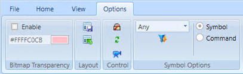
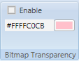
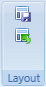
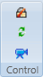
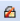
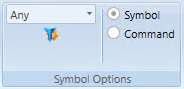
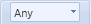
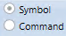

Options Tab
Options Tab
The Options tab provides you with special editing and layout options. The Bitmap Transparency group allows you to create transparent bitmap files.

The Options tab contains the following groups:
Bitmap Transparency
The Bitmap Transparency group allows you edit a bitmap image by enabling the bitmap transparency feature.

Bitmap Transparency Group | |
Name | Description |
Enable | Enable or disable the Transparency Color feature for editing a bitmap image. |
Color Field | Set the Transparent Color by entering a hexadecimal color code or the name of a color, or selecting a color from the Brush Editor view. |
Layout
The Layout group options allow you to customize the views and dock panel settings or restore them back to the original configuration. The configuration you choose becomes active when you re-enter the application.

Layout Group | ||
Icon | Name | Description |
Save as Default | Save your current dock panel layout and any user settings or preferences selected in each of the views as your default settings. | |
Restore Default | Restore the configuration to the original default settings. | |
Control Group
The Control group options allow you to work with locked elements on the canvas and refresh any open views.

Control Group | ||
Icon | Name | Description |
 | Break Lock | Select a locked element on the canvas with the rubberband or keyboard function. This allows you to temporarily work with locked elements in Design mode. |
Refresh | Reload all open views. Any unsaved settings will be lost. | |
Coverage Area Mode | Toggles the display and view of the coverage areas. | |
Symbol Options
The options in the Symbol Options group provide tasks to use in conjunction with Symbols that will be added to the active graphic.

Symbol Options Group | ||
Icon | Name | Description |
 | Symbol Style Filter | Select a Style to apply to the ensuing Symbols you insert onto the active canvas. You can also apply the filter to selected Symbols already on the canvas. Selecting a Style from the drop-down menu displays the default Symbol associated with that Style depending on the data point and Function the Symbol is associated with. The default option Any, displays the default Symbol associated with theStyle group None. Also, if a default Symbol does not exist for the selected Style, then the default None Symbol is displayed. |
Function Filter | Used in conjunction with the Replace Symbol Instances option of the Graphics menu that displays on right-click, this feature allows you to display associated symbols from the Function or/and the object model. Cleared = Display assigned Function Symbols (if available; assigned object model Symbols are displayed in the event that no Function Symbols exist). Checked = Display the associated Symbols from both Function and object model.
| |
 | Symbol Preference | Allows you to determine which default symbol displays, when you drag-and-drop an object from System Browser onto the canvas. A symbol can have a default symbol and a default command symbol associated with it. Depending on your selection, one of the following displays on the canvas: Symbol – The default symbol with existing functionality and known animation. Command – The default command symbol, representing an object’s command attributes. If there is no command symbol associated with the symbol, then the default symbol is displayed instead. |
Related Topics
- Bitmap Transparency Group
For related procedures, see Applying Bitmap Transparency.
- Control Group
For background information on coverage area, see Coverage Area
For related coverage area workflow, see Associating Video Cameras with Objects from Graphics
- Symbols Options
For background information, see Symbol Basics.
For related procedures, see Configuring and Assigning Symbols.